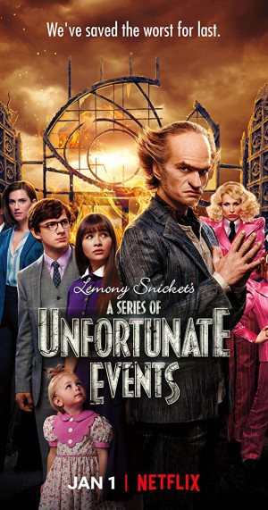

Đây là bộ phim có nhiều nhân vật trẻ em thông minh nhất mình từng biết và bộ phim này làm theo kiểu phim phiêu lưu kì thú

Các sự kiện trong phần hai của loạt phim Spider-Man diễn ra một năm sau khi con
nhện nhiễm phóng xạ cắn vào tay nhân vật chính Miles Morales.
Song song với sứ mệnh giải cứu thế giới, ở độ tuổi 15, Miles vẫn còn là
một thiếu niên và bảo vệ người dân New York không phải là mối quan tâm duy nhất của cậu.
Còn tiếp theo như thế nào thì tự đi mà coi phim!
Câu chuyện này xoay quanh về hai dì cháu Cady James đấu với con búp bê mất kiểm soát M3Ggam (Megan)